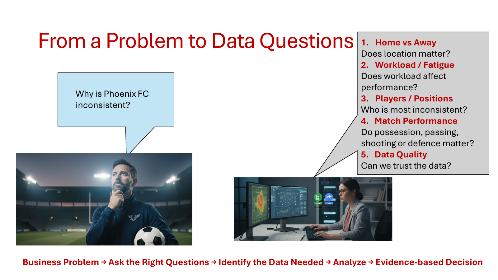
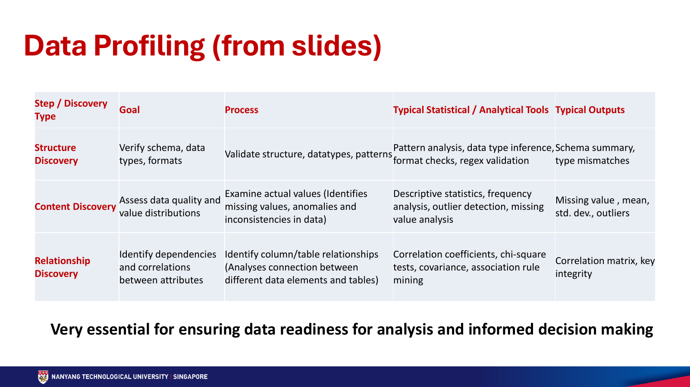
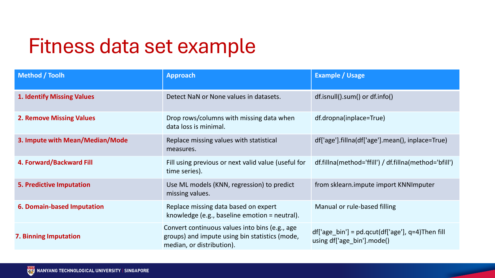
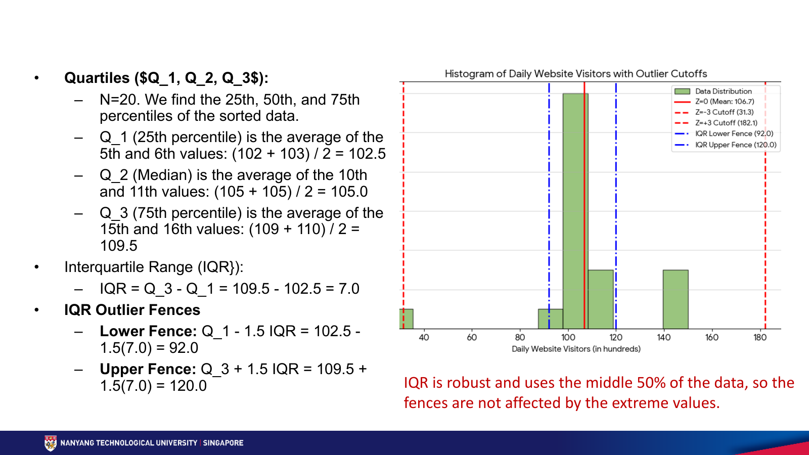

第一周：数据剖析与清洗
先把业务问题变成可测量的数据问题，再检查数据能不能回答它。本周按这个顺序讲：数据科学流程 → 数据类型 → 数据剖析（profiling）→ 先划分再填补 → 清洗 → 缺失值 → 异常值。
来源：Dr. Smitha K G，Week1_DataProfiling and Cleaning_detail.pdf（37 页）及 fitness_missing_data_without_solution.ipynb。页码按 PDF 页序。
Data science thinking process｜从问题到行动
本章图表 / 方法：Phoenix FC 足球队表现不稳定案例，Ask → Prepare → Process → Analyze → Share → Act（第 2–11 页）。
一句话：“球队怎样变好”这种问题没法直接交给模型。要先拆成具体问题，每个问题对应可测量的变量，再决定收集什么数据。


| 阶段 | 足球案例 | 产出 |
|---|---|---|
| Ask | 体能：下半场是否变慢？控球：在哪里丢球？射门：从哪里射？纪律：为什么犯规？ | 问题 → 变量。体能 → 速度、距离、比赛时段；射门 → 射门次数、位置、结果 |
| Prepare | 历史记录、GPS 可穿戴设备、比赛事件数据、视频 | 四项检查：Relevant（能回答问题吗）、Complete（缺不缺）、Reliable（准不准）、Governed（同意、隐私、所有权、允许用途） |
| Process | GPS 信号丢失 → 缺失值；半场跑 20 公里 → 不可能，标为异常去调查；“犯规”和“丢球”的定义要统一，并用视频核对 | Detect → Handle → Standardize / Validate → Transform。例如距离 → 每 90 分钟距离；射门位置 → 热力图 / xG |
| Analyze | 70 分钟后高强度冲刺下降；长传完成率低；射门多但每次射门的 xG 低；丢球后犯规集中 | Visualize → Compare → Test relationships → Interpret |
| Share | 三个重点：体能、控球、射门质量 | Evidence → Insight → Decision |
| Act | 调整训练和换人；改传球策略；选择更好的射门位置；改善防守转换 | 执行后用新数据衡量效果，再迭代 |
机器学习流水线（第 11 页）：定义问题（什么任务、什么数据）→ 获取数据 → 理解与准备数据 → 训练 → 评估、部署与维护。
- 获取数据：新收集的数据贴合问题，但耗时昂贵，还要请专家标注；用现成数据要检查质量、相关性和法律伦理风险。
- 理解与准备：看结构、质量、分布、关系；再做清洗、编码 / 归一化、特征工程。
Structured / Unstructured Data｜数据类型和各自的难点
本章图表 / 案例：汽车评价表、广告销售表、时间序列、MRT 网络，以及文本、图像、视频、语音（第 12–20 页）。
| 类型 | 特点 | 课件例子 / 处理方法 |
|---|---|---|
| 结构化：表格 | 高度组织、变量定义清楚、容易挖掘；可以是类别或数值 | 汽车评价（安全、车门、座位 → 类别）；TV / Radio / Newspaper 广告费与销量（数值） |
| 结构化：时间序列 | 有时间戳、间隔规律、当前值依赖之前的值 | 股票、天气、价格与促销 |
| 结构化：网络 | 固定的 node（实体）+ edge（关系），两者都有属性，可用表格存储 | MRT：站点是节点（站码、线路、是否换乘），轨道是边（距离、时间、费用、方向）；还有社交网络、供应链、网络安全、论文引用 |
| 非结构化：文本 | ① 高维（run / running / ran / runner 被当成 4 个特征）② 依赖上下文（bass：低音或鲈鱼）③ 歧义和讽刺（“Great service... NOT.”）④ 顺序重要 | 词形还原、去停用词、分词；Word2Vec、BERT、Transformer 捕捉上下文 |
| 非结构化：图像 | ① 维度极高（15 万+ 像素）② 空间相关 ③ 语义鸿沟（像素 → “STOP 标志” → “危险”）④ 不变性（同一物体看起来不同） | CNN 用卷积学局部模式，池化层帮助实现不变性 |
| 非结构化：视频 | ① 维度爆炸（宽 × 高 × 通道 × 帧）② 时间相关 ③ 多模态融合（画面 + 声音）④ 事件定位 | 3D-CNN、RNN / LSTM、目标跟踪 |
| 非结构化：语音 | ① 时序波形 ② 特征转换（频谱图）③ 声学差异（说话人、情绪）④ 噪声干扰 | RNN / 时间卷积网络；MFCC 特征；先降噪 |
易错：结构化不等于“全是数字”。汽车评价表全是类别，但仍是结构化数据。区别在于有没有固定的字段（schema）。
Data Profiling｜三类发现
本章图表 / 方法：三类 discovery 对照表、5 条客户记录、describe() 与 corr()（第 21–24 页）。
一句话：Profiling 是在清洗之前，系统地检查数据长什么样、值是否合理、字段之间有什么关系。


| 类型 | 问的问题 | 工具 | 输出 |
|---|---|---|---|
| Structure discovery | schema、数据类型、格式对不对？ | 模式分析、类型推断、格式检查、正则校验 | schema 摘要、类型不匹配 |
| Content discovery | 实际的值有什么问题？ | 描述统计、频数、异常检测、缺失分析 | 缺失数、均值、标准差、异常值 |
| Relationship discovery | 列之间、表之间怎么关联？ | 相关系数、卡方检验、协方差、关联规则 | 相关矩阵、键完整性 |
课件客户表：能挑出几个问题？
| ID | Name | Age | Country | Revenue | Product_Views | |
|---|---|---|---|---|---|---|
| 1 | John Doe | 22 | john@gmail.com | Singapore | 500 | 15 |
| 2 | Jane Lee | 空 | jane_lee@gmail.com | SG | 120.5 | 8 |
| 3 | Mike Tan | −5 | mike_tan | Malaysia | 85 | 25 |
| 4 | John Doe | 29 | john@gmail.com | Singapore | 500 | 15 |
| 5 | Sarah Wu | 35 | sarah@yahoo.com | USA | 900 | 5 |
- 重复：John Doe 出现两次（同一邮箱），疑似重复记录。
- 缺失 + 无效：Age 有 1 个缺失，还有一个 −5。
- 格式：“mike_tan” 不是合法邮箱。
- 不一致：SG 和 Singapore 是同一个国家。
| 函数 | 用途 | 这张表的结果 |
|---|---|---|
df['Age'].min() | 找偏低的异常值 | −5，无效 |
df['Revenue'].max() | 找最大值 | 900 |
df.describe() | 数值摘要：范围、集中趋势、离散程度、四分位数 | 平均年龄被 −5 拉低 |
df[['Name','Country']].describe(include='object') | 类别摘要：count、unique、top、freq | Country 有 4 个 unique（SG 和 Singapore 被当成两类）→ 需要统一 |
df[['Age','Revenue','Product_Views']].corr() | 数值变量之间的线性相关（Pearson） | Age 与 Product_Views 强负相关 |
课件勘误：按原表重算，平均年龄是 (22 − 5 + 29 + 35) / 4 = 20.25（课件写 21.5）；Age 与 Product_Views 的相关系数约 −0.925（课件写 −0.908）。另外，判断 ID 是否唯一要用 nunique()，不是 count()。只有 5 行数据，“年长客户浏览更少”不能当成可靠结论。
Golden rule in machine learning｜先划分，再 fit
本章方法：训练 / 测试分离与填补器的 fit / transform（第 25 页）。
规则：永远不要在划分之前，用全部数据计算填补值（均值、中位数等）。否则测试集的信息进入了训练过程，这叫 data leakage，结果会过于乐观。
- 划分训练集和测试集
- 只在训练集上 fit imputer
- 用这个 imputer 去 transform 训练集和测试集
例子：训练集年龄 20、30、缺失；测试集年龄 90。训练均值 = 25，缺失值填 25。如果用全部数据算均值 = (20 + 30 + 90) / 3 ≈ 46.67，测试集的 90 已经影响了训练数据。
from sklearn.impute import SimpleImputer
imputer = SimpleImputer(strategy="mean") # 也可以 "median"、"most_frequent"
X_train_filled = imputer.fit_transform(X_train) # 只从训练集学到均值 25
X_test_filled = imputer.transform(X_test) # 测试集只 transform，用的还是 25这条规则同样适用于缩放、编码、PCA 等所有要“学参数”的预处理，第二、三周会反复出现。
Data cleaning｜八类数据问题
本章方法 / 案例：数据清洗定义与八类质量问题对照表（第 26–27 页）。
定义：检测并纠正数据中的错误、不一致和不准确，使数据准确、一致、可以用于分析或机器学习。通常在 profiling 之后进行。
| 问题 | 描述 | 麻烦在哪 | 课件例子 |
|---|---|---|---|
| Missing / incomplete | 字段为空或部分填写 | 降低准确性，可能带来偏差；要填补或删除 | 缺年龄、缺一段 EEG |
| Duplicated rows | 同一记录出现多次 | 虚增样本量，误导分析 | 两条一样的情绪评分 |
| Outliers / invalid | 超出合理范围 | 难判断真实还是错误，会拉偏均值 | 心率 900 bpm、反应时间为负 |
| Inconsistent formats / units | 格式或单位不同 | 难以整合，比较出错 | 37°C vs 98.6°F；2025-02-01 vs 01/02/25 |
| Typo / case errors | 拼写或大小写不同 | 分组出错，不易自动纠正 | Happy / happy / Hapy |
| Encoded / garbled | 字符编码错误 | 丢失含义，需要重新编码 | “émotion” 应为 “émotion” |
| Truncated | 存储或解析时被截断 | 记录不完整，常被忽略 | “P01” 应为 “P01023” |
| Unnecessary metadata | 与分析无关的字段 | 增加杂乱和噪声 | Last Edited By、Export Timestamp |
clean = customers.copy() # 在副本上清洗
clean["Country"] = clean["Country"].replace({"SG": "Singapore"})
clean.loc[clean["Age"] < 0, "Age"] = float("nan") # 无效值先标为缺失
clean[clean.duplicated(subset=["Name", "Email"], keep=False)] # 找疑似重复，再人工确认Fitness data set example｜七种缺失值处理
本章图表 / 方法：识别、删除、统计量填补、前后填充、KNN 预测填补、领域规则、分箱（第 28 页；配套 Notebook 第 1–7 节）。


| 方法 | 代码 | 什么时候用 | 注意 |
|---|---|---|---|
| 1. 识别 | df.isnull().sum() / df.info() | 第一步，先数清楚 | -999、空字符串不会被自动当成缺失 |
| 2. 删除 | df.dropna() | 缺失很少、删掉损失小 | 默认删整行；6 个缺失分散在 6 行，就要删 6 行 |
| 3. 均值 / 中位数 / 众数 | df['age'].fillna(df['age'].mean()) | 均值：对称数值；中位数：有偏态或异常值；众数：类别 | 会压低方差；只从训练集计算 |
| 4. 前向 / 后向填充 | df.ffill() / df.bfill() | 时间序列 | 必须是同一对象、按时间排序；bfill 用了未来的值 |
| 5. 预测填补 | from sklearn.impute import KNNImputer | 缺失值能由其他特征推测 | 距离受尺度影响，要先缩放 |
| 6. 领域规则 | 人工或规则填写 | 有明确业务依据，例如情绪基线 = neutral | 规则要有证据，缺失运动时长不一定等于 0 |
| 7. 分箱填补 | df['age_bin'] = pd.qcut(df['age'], q=4)，再按组取众数等 | 把连续值分组，用组内统计量填 | 样本少时组内估计不稳定 |
健身 Notebook（15 行 × 8 列）
列：Age、Daily_Steps、Sleep_Hours、Calories_Intake、Water_Intake_Liters、Mood、Workout_Minutes、Heart_Rate。Age 和 Heart_Rate 没有缺失，其余 6 列各缺 1 个，共 6 个缺失，分散在 6 行。
- 删除的代价：只有 6 / 120 = 5% 的单元格缺失，但
dropna()会删掉 6 行，损失 40% 的样本。 - ffill 不合适：表里没有用户 ID 和时间戳，相邻行不是同一个人的连续记录。
- KNN 要先缩放：步数是几千，饮水量是个位数，不缩放的话距离几乎只由步数决定；Mood 是文字，要单独处理。
Outlier detection｜Z-score、IQR 与其他方法
本章图表 / 方法：20 天网站访客数据，Z-score 与 IQR 对比，Isolation Forest、LOF、DBSCAN、One-Class SVM（第 29–37 页）。
示例数据（访客数，单位：百人）：25, 95, 100, 101, 102, 103, 103, 104, 104, 105, 105, 106, 107, 108, 109, 110, 112, 140, 145, 150
Z-score：离均值几个标准差
z = (x − μ) / σ，|z| > 3 判为异常（有时用 2.5 或 4）。
- 适合：近似正态、对称的数据。优点：简单。
- 缺点：偏态数据不可靠；对极端值敏感，极端值会抬高 μ 和 σ，把自己“藏”起来。
- 本例：μ = 106.7，σ ≈ 23.9，围栏约 34.9 和 178.5，只抓到 25。140、145、150 没被抓，因为它们把均值和标准差拉大了。
IQR：用中间 50% 定围栏
IQR = Q3 − Q1；下界 Q1 − 1.5 × IQR，上界 Q3 + 1.5 × IQR。


- N = 20，排序后 Q1 = 第 5、6 个数的平均 = (102 + 103) / 2 = 102.5
- Q3 = 第 15、16 个数的平均 = (109 + 110) / 2 = 109.5
- IQR = 109.5 − 102.5 = 7；1.5 × IQR = 10.5
- 下界 = 102.5 − 10.5 = 92；上界 = 109.5 + 10.5 = 120
- 异常值：25、140、145、150，共 4 个
IQR 只看中间一半数据，极端值改变不了 Q1 和 Q3，所以稳健，还能直接用箱线图看出来。缺点：不适合高维数据，抓不到复杂模式。
课件勘误：第 30–31 页 Z-score 围栏写的是 31.34 和 182.1，按原数据重算是 34.9 和 178.5（用样本标准差则是 33.0 和 180.4）。几种算法都只抓到 25，结论不变。
Isolation Forest：越快被隔离越可疑
建很多棵随机树，每次随机选特征和切分点。异常点“少而不同”，几次切分就被隔离，路径越短越可能是异常。课件类比“20 个问题”游戏：正常的 105 要问很多次才能和邻居分开，25 和 150 一两次就分开了。
- 优点：适合高维、非线性、大数据，速度快，不假设任何分布。
- 缺点：比 Z-score / IQR 难解释；有超参数（contamination，预期异常比例）。
from sklearn.ensemble import IsolationForest
detector = IsolationForest(contamination=0.2, random_state=42)
flags = detector.fit_predict(visitors.to_frame()) # 1 = 正常，-1 = 异常其他方法与选择
| 方法 | 原理 | 怎么判异常 |
|---|---|---|
| LOF（Local Outlier Factor） | 比较一个点和它邻居的局部密度 | LOF ≈ 1 正常；LOF ≫ 1 说明比邻居稀疏得多 → 异常 |
| DBSCAN | 聚类算法：设定邻域半径和最少点数 | 密集区是 core 点，靠近密集区的是 border 点，两者都不是的是 noise → 异常 |
| One-Class SVM | 学一个包住大多数正常点的边界（novelty detection） | 新点落在边界外 → 异常 |
| 数据特点 | 推荐方法 | 例子 |
|---|---|---|
| 正态分布 | Z-score（参数方法，简单快） | 身高、体重、考试分数 |
| 偏态 / 非正态 | IQR（非参数，稳健）或 Isolation Forest | 房价、薪资 |
| 密度不均 / 局部簇 | LOF 或 DBSCAN | — |
| 高维、复杂 | Isolation Forest 或 One-Class SVM | 欺诈检测、网络异常 |
异常 ≠ 错误。找到候选异常后，先核对来源和业务含义，再决定保留、修正还是删除。第四周的 outlier semantics 会再讲。
自测
本章图表 / 方法：按考试常见题型整理，先自己答再展开。
1. “计算相关矩阵、做卡方检验”属于哪类 profiling？“检查邮箱格式”呢？
前者是 relationship discovery；邮箱格式是 structure discovery（格式 / 正则校验）。
2. 训练集年龄 20、30、缺失，测试集 90。缺失值应该填多少？
25，只用训练集的均值。用全部数据算出的 46.67 包含了测试集信息，是 data leakage。
3. 收入数据严重右偏，缺失值用均值还是中位数？
中位数。偏态数据的均值会被极端值拉高，中位数更稳健。
4. 一个传感器每分钟记录一次温度，偶尔缺值，用什么方法？
前向 / 后向填充（ffill / bfill），因为这是同一对象按时间排序的序列。
5. 数据：2, 4, 4, 5, 6, 7, 8, 30。已知 Q1 = 4、Q3 = 7.5，用 IQR 找异常值。
IQR = 3.5，1.5 × IQR = 5.25。下界 = −1.25，上界 = 12.75。30 是异常值。
6. 均值 50、标准差 5，某值为 66。用 |z| > 3 判断。
z = (66 − 50) / 5 = 3.2 > 3，是异常值。
7. 为什么同一份访客数据，Z-score 只抓到 1 个，IQR 抓到 4 个？
极端值 140、145、150 抬高了均值和标准差，把自己的 z 值拉小了；IQR 只用中间 50% 的数据，不受极端值影响。
8. 高维的信用卡交易数据找欺诈，用什么方法？在 Isolation Forest 里，异常点的路径长还是短？
用 Isolation Forest 或 One-Class SVM。异常点路径短。
9. LOF = 1.02 和 LOF = 4.5，哪个更可能是异常？
4.5。LOF 接近 1 表示和邻居密度相当；远大于 1 表示比邻居稀疏得多。
10. 15 行数据中有 6 个缺失单元格，分散在 6 行，dropna() 会损失多少样本？
6 / 15 = 40%。单元格缺失比例低，不代表删行的代价小。